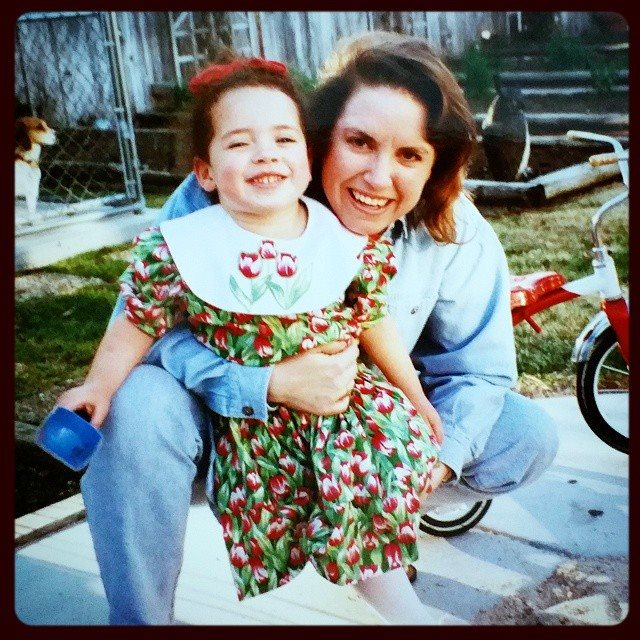
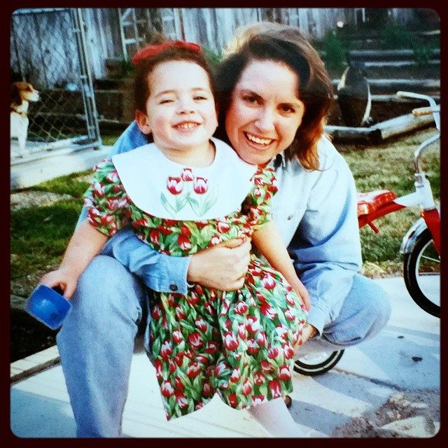

Kid Wella :
Artistic Wundarkin with a Flare for the Dramatics
 

Born: April 14th, 1994 in Burbank, CA
Big Three: Cancer, Rising; Aries, Sun; Gemini, Moon
Favorite Passtimes :
- Playing make believe
- Drawing & Painting, often depicting hidden tunnels
- Watching cartoons, Top 3; Powerpuff Girls, Courage the Cowardly Dog, and Adventure Time
Eventually the cats were rehomed as my mother's new partner was allergic. Not long after their wed I met the first dog love of my life. This little puppy with the biggest belly was named Zoë.
The First Puppo : Zoë
The Lovable Jack Russel Terror
Zoë had the personality of a grumpy old lady forced into the body of a creature in desperate need to run and catch balls. When she was just a wee puppy she had a brush with death, consuming a hot dog that was the length of her body. Puppys, am I right? After successfully surviving she lived her life fully and in favor of me. We slept together every night, playing catch me if you can around the house, going turbo often.
Her cranky attitude paired perfectly with my teenage moodiness. She didn't trust men and a couple of "friends" who ended up being fiends. She was my little cow, she passed this last year, 2021. I was grateful she got to live such a full life with so much love.
My College Roomate : Po
A Brief history of the Sassiest Gal
My Furever Gal :
The Luckiest Bean Sprout